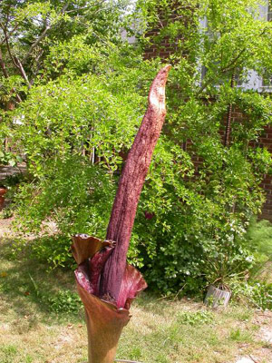

Previous || Next || Return to Mystery Plants || USC Herbarium
This Week's Mystery Plant | Dr. John B. Nelson Curator, USC Herbarium |
|
A couple of weeks ago we had "Golden Club," as a Mystery Plant…a native, aquatic member of the philodendron family. This week we have another philodendron relative, and I just couldn't resist. This plant bloomed recently here in Columbia in the amazing backyard garden of Jenks Farmer. I had brought it to him about five years ago from Florida, as a volleyball-sized tuber, and he planted it. Every year since then, it has faithfully produced a single, colossal, palm-like leaf, about 5' tall. (Dr. Dan Nicholson, of the US National Herbarium at the Smithsonian Institution, and probably the world's leading authority on the philodendron family, has provided the identification for this thing.) This year, Jenks' plant produced its first bloom. The "flower" is actually a massive inflorescence. A purplish-green stalk, about 3" in diameter, holds up a flowering spike which is surrounded by a shockingly purplish-red, fleshy bract (or "spathe"). The spike itself has many tiny female flowers at its base, and above those, a series of tiny male flowers. Above the flowers, the spike terminates in a prominently lurid, tapering sterile "appendage." True to its genus, this plant produced a strong stink, largely suggestive of a pile of dead rats. This makes sense, as flies and other carrion-loving insects visit and pollinate the flowers. The inflorescence lasts only a few days, soon collapsing and rotting, and then the plant will send up a single leaf. This species is native to warm forests of Vietnam and southern China, and is otherwise widely grown as a curiosity. It is fairly easy to grow either in a greenhouse or outside, but if it blooms for you, be prepared for some raised eyebrows (and "held" noses). |
 Photo by Hunter Desportes |